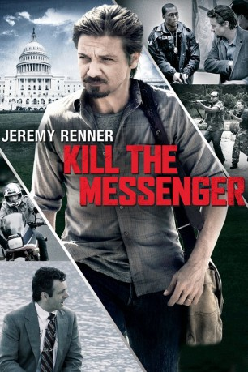

#1654 Kill the Messenger
 
 IMDB-Wertung: 7.0 / 10
IMDB-Wertung: 7.0 / 10  Metascore: 60
Metascore: 60 
Durch Zufall stößt der Journalist Gary Webb in den 1990er Jahren auf Verstrickungen von CIA mit mittelamerikanischen Drogenkartellen. Durch Kokainverkauf in den Straßen von South Central L.A. wurden die Contras in Nicaragua finanziert. Seine brisanten Enthüllungen in den San José Mercury News lösen ein politisches Erdbeben aus. CIA schlägt mit Verleumdungen zurück und auch Kollegen renommierter Medien diffamieren den Autor, der nicht nur um Ansehen, Job und Familie kämpfen muss, sondern auch um sein Leben.
Jahr: 2014
Dauer: 112 Minuten
FSK: 12
Land: USA Studio: Focus FeaturesTonspuren: DTS - ,
Untertitel: Deutsch,
Auflösung: 1080p (1920x800) Größe: 7823 MB
Genre: Biographie, Krimi, Drama, Mystery, Thriller
Regisseur: Michael Cuesta
Drehbuch: Peter Landesman, Gary Webb, Nick Schou
Soundtrack: Nathan Johnson
Darsteller:
 Jeremy Renner als Gary Webb
Jeremy Renner als Gary Webb Robert Patrick als Ronald J. Quail
Robert Patrick als Ronald J. Quail Jena Sims als Quail's Girlfriend
Jena Sims als Quail's Girlfriend Robert Pralgo als L.A. Sheriff
Robert Pralgo als L.A. Sheriff Ted Huckabee als Bob
Ted Huckabee als Bob Mary Elizabeth Winstead als Anna Simons
Mary Elizabeth Winstead als Anna Simons Lucas Hedges als Ian Webb
Lucas Hedges als Ian Webb Rosemarie DeWitt als Sue Webb
Rosemarie DeWitt als Sue Webb Matt Lintz als Eric Webb
Matt Lintz als Eric Webb- Parker Douglas als Christine Webb
 Joshua Close als Rich Kline
Joshua Close als Rich Kline Paz Vega als Coral Baca
Paz Vega als Coral Baca- Aaron Farb als Rafael Cornejo
 Barry Pepper als Russell Dodson
Barry Pepper als Russell Dodson- Clay Edmund Kraski als DEA Agent Jones
 Yul Vazquez als Danilo Blandon
Yul Vazquez als Danilo Blandon Tim Blake Nelson als Alan Fenster
Tim Blake Nelson als Alan Fenster Michael Kenneth Williams als Ricky Ross
Michael Kenneth Williams als Ricky Ross- Jen Harper als Ricky Ross Trial Judge
 Oliver Platt als Jerry Ceppos
Oliver Platt als Jerry Ceppos- Manuel Rodriguez als Guard
 Andy Garcia als Norwin Meneses
Andy Garcia als Norwin Meneses Brett Rice als Hansjorg Baier
Brett Rice als Hansjorg Baier- Jonathan Fritschi als Soldier
 Michael Sheen als Fred Weil
Michael Sheen als Fred Weil Gil Bellows als DEA Agent Miller
Gil Bellows als DEA Agent Miller Steve Coulter als Anonymous Agent
Steve Coulter als Anonymous Agent Kenny Alfonso als Marc Mansfield
Kenny Alfonso als Marc Mansfield- Dan Futterman als Leo Wolinsky
- Susan Walters als Los Angeles Times Editor
 Richard Schiff als Richard Zuckerman
Richard Schiff als Richard Zuckerman David de Vries als Washington Post Editor
David de Vries als Washington Post Editor- David Lee Garver als Doug Farah
 Rhoda Griffis als Female Anchor
Rhoda Griffis als Female Anchor Andrew Masset als San Jose Mercury News Editor
Andrew Masset als San Jose Mercury News Editor E. Roger Mitchell als Detective
E. Roger Mitchell als Detective- Kevin Harrison als Man in Suit
 Ray Liotta als John Cullen
Ray Liotta als John Cullen Michael H. Cole als Pete
Michael H. Cole als Pete- Som Aidoo als Ricky Ross Henchman , uncredited
- David Alessi als DEA Agent , uncredited
- Grace Baine als Reporter Washington Post , uncredited
- Shaira Barton als DC Business Woman , uncredited
- Wadette Bradford als Juror , uncredited
 Jimmy Carter als Himself , archive footage, uncredited
Jimmy Carter als Himself , archive footage, uncredited- Paul Chappell als LA Times Journalist , uncredited
 Raul Colon als Prisoner , uncredited
Raul Colon als Prisoner , uncredited Joe Crosson als Gang Banger , uncredited
Joe Crosson als Gang Banger , uncredited- Nathan Ferguson als Tourist , uncredited
- Lisa Finlayson als Lawyer , uncredited
Datei: X:\2014(G-M)\Kill the Messenger (2014, FSK12, 1920x800).mkv seit 31.07.2015
Festplatte: HD 2013(I-Z)-2014(A-Z)
 Es gibt insgesamt 136 Filme in der Gruppe '2014(G-M)'
Es gibt insgesamt 136 Filme in der Gruppe '2014(G-M)'